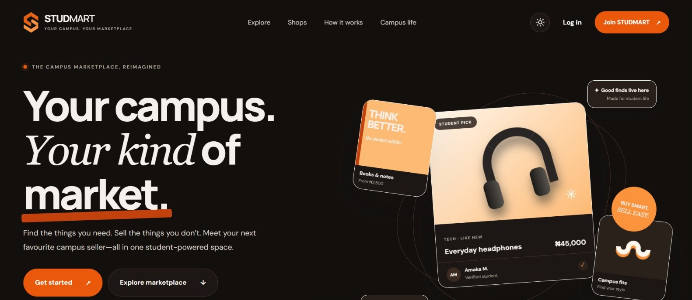

Full-stack marketplace
STUDMART
A campus marketplace where students buy and sell items, and shops run their own accounts. I designed it, built the frontend and the Node.js API, and deployed both.

What it does
Accounts for students and shops
Students sign up with a personal account. Shops use a separate account type with a shop name, address, WhatsApp number and description, so they can be found in the shops directory.
Listings
Sellers post items with photos, a category, condition and price, then edit, mark as sold or remove them. Buyers search, filter by category and save listings they like.
Trust and verification
Students request a verified badge by sharing a link to their student ID. An admin approves or rejects the request, and the student is emailed the result.
Admin dashboard
Admins review verification requests, manage users and listings, and edit the homepage billboard slides, including text, links and photos.
How it's built
Frontend
Static site on Vercel
Plain HTML, CSS and JavaScript pages for the marketplace, listing forms, profiles, shops and the admin view. Photos upload straight from the phone or computer.
Backend
Node.js API on Render
A JSON API with no external dependencies. It handles token-based login, listings, saves, uploads with file-signature checks, verification and admin actions.
Transactional mail
Password reset links expire after an hour and work once. Students also get an email when their verification is decided. Sent through Resend.
Next steps
The current data store is a JSON file on the server, and the free hosting tier erases it on redeploy. Before real users arrive, I'd move the data to Postgres and the photos to cloud storage. That's the next piece of work on this project.